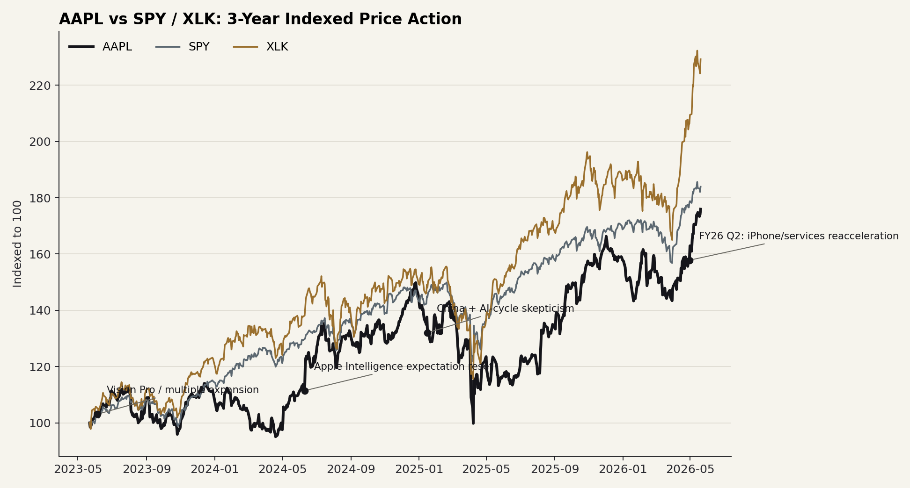
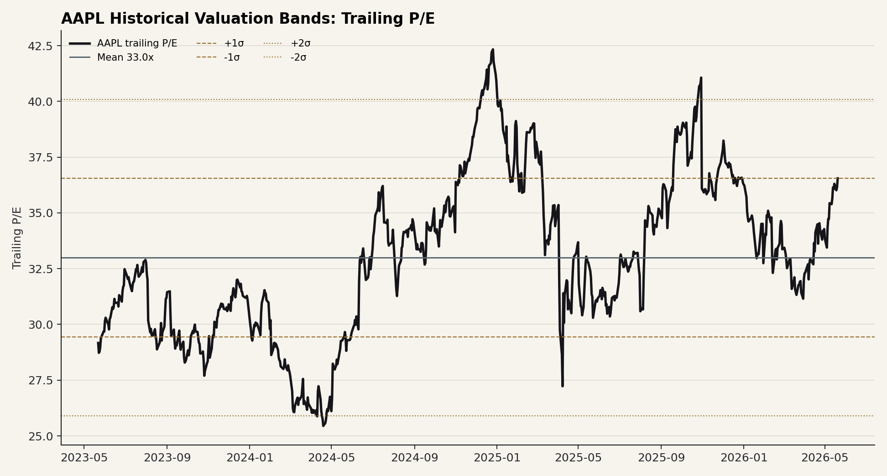
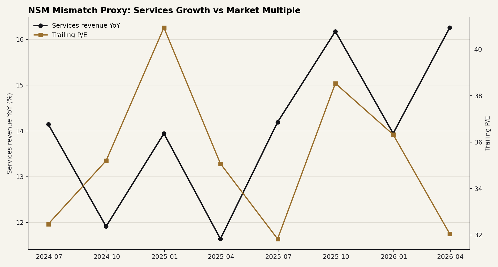

Ticker: AAPL
Date: 2026-05-21
Classification: Watchlist / Quality Compounder
结论：Apple 仍是高质量复利资产，但本轮 SitRep 不建议直接进入下一阶段深挖。理由不是业务差，而是“错误定价锚”不够清晰：市场和卖方已经在用 FY27 EPS、iPhone 换机周期、Services 增速/毛利、回购与 AI 产品节奏来给 Apple 定价，这些也正是长期投资人应关注的核心变量。
基本面确实在改善：FY2026 Q2 营收 1112 亿美元，同比增长 17%；iPhone 同比增长 22%；Services 达到 310 亿美元，同比增长 16%；公司指引 6 月季度营收同比增长 14% 至 17%。但股价也已接近 52 周高位，TTM P/E 约 36.6x，主流卖方目标价大多在 315 至 340 美元，较 302.25 美元现价的上行并不构成显著组合级错配。
更合适的定位是：把 Apple 放入观察名单，等待一个更明确的错配窗口。该窗口可能来自两类方向：一是市场低估“AI 设备 + Services ARPU + 企业 Mac 工作流”的长期价值捕获；二是监管、存储成本和中国需求使市场给出过度折价。目前证据更像高质量资产的再加速，而不是明显的结构性错误定价。
| Item | Latest Situation |
|---|---|
| Market Data & Positioning | 2026-05-20 收盘价 302.25 美元；52 周区间 193.46 至 303.20 美元；市值约 4.44 万亿美元，企业价值约 4.46 万亿美元。机构持股约 65.8%，空头占流通股约 0.92%，不是明显拥挤做空标的。 |
| Key Financial Metrics | FY2026 Q2 营收 1111.84 亿美元，净利润 295.78 亿美元，摊薄 EPS 2.01 美元。公司毛利率 49.3%，其中 Services 毛利率 76.7%。现金与有价证券 1470 亿美元，总债务 850 亿美元，净现金约 620 亿美元。 |
| Price Action & Technicals | 30 日价格从约 260 美元升至 302.25 美元，站上 50 日均线 268.6 美元和 200 日均线 260.6 美元。RSI 74.7，MACD 为正但柱状动能从 5 月中旬高点回落，技术面偏强但短线过热。 |
| Positioning | 新增 1000 亿美元回购授权、股息提高 4%。管理层不再把“净现金中性”作为正式目标，意味着资本结构弹性提高，但资本回报仍是估值支撑的一部分。 |
| Key Metric | Value | Implication |
|---|---|---|
| iPhone revenue growth | +22% YoY | 换机周期从“AI 叙事”变成了真实收入增长，但需要验证 FY2026 下半年是否可持续。 |
| Services revenue / margin | $31.0B / 76.7% | Services 仍是最清晰的价值捕获引擎，也是监管风险最集中的利润池。 |
| TTM P/E / Forward P/E | 36.6x / 31.5x | 估值已从 2026 年 3 月低位明显修复，下一阶段需要 EPS 上修而非单纯倍数扩张。 |
Pricing Anchor & Embedded Expectations: 市场主要锚是 FY26/FY27 EPS 倍数，辅以 EV/FCF、EV/Sales 与 Services 利润占比。BofA 目标价 330 美元，使用 32x C27E EPS 10.29 美元；Bernstein 目标价 340 美元，使用 33x FY27 EPS 或 30.2x EV/FCF；Morgan Stanley 目标价 315 美元，以 FY27 EV/Sales 8.1x 桥接到约 32x FY27 P/E；UBS 的 220 美元目标价体现了更低 EPS 与约 28x 混合 CY26/CY27 P/E 的熊派框架。
Peer Benchmarking: Apple 的估值溢价已不低。它的 P/S 与 Microsoft 接近，但收入增速低于多数互联网/AI 平台；毛利率显著低于纯软件/广告平台，但现金流质量、生态控制权和资本回报强于多数硬件公司。真正的问题不是“Apple 是否好”，而是 30x 以上 forward P/E 是否已经充分反映了 Services 与 AI 设备期权。
| Company | Market Cap | TTM P/E | Forward P/E | Revenue Growth | Op Margin |
|---|---|---|---|---|---|
| AAPL | $4.44T | 36.6x | 31.5x | 16.6% | 32.3% |
| MSFT | $3.13T | 25.1x | 21.8x | 18.3% | 46.3% |
| GOOGL | $4.71T | 29.7x | 26.9x | 21.8% | 36.1% |
| META | $1.54T | 22.0x | 16.7x | 33.1% | 40.6% |
| NVDA | $5.41T | 34.2x | 19.2x | 73.2% | 65.0% |
Historical Context & Charts: 三张图分别显示：Apple 过去三年相对 SPY/XLK 的价格表现、3 年 TTM P/E 波动区间、以及 Services 增速与估值倍数之间的 NSM 错配代理。



NSM Framework:
| Lens | Assessment |
|---|---|
| CEO NSM | 用户价值交付：活跃设备装机量、iPhone/Mac 新用户与升级用户、客户满意度、Apple Intelligence 在核心体验中的渗透。FY2026 Q2 管理层披露活跃设备超过 25 亿台，并强调 iPhone 17、MacBook Neo 和 AI-capable Mac 的需求。 |
| Long-term investor NSM | 耐久价值捕获：Services ARPU、Services 毛利、留存/换机周期、生态默认入口的定价权、FCF 与每股回购增厚。最接近的公开代理是 Services 收入同比增速与公司 FCF。 |
| Market-consensus NSM | FY27 EPS 与 P/E 倍数。卖方虽讨论 Services 与 AI，但最终目标价大多落在 32x 至 33x FY27 EPS 的框架内。 |
| Mismatch category | 大体 aligned，夹杂轻微 healthy lag。市场并非完全看错 Apple，而是在等待 AI/Siri、Services 监管冲击、存储成本和中国需求的净结果。错配可能存在，但尚未大到足以优先立项。 |
更好设备体验与本地 AI 能力 → 更高换机意愿与跨设备使用 → iPhone/Mac/Watch/Services 工作流绑定 → 生态默认入口和企业部署依赖 → Services ARPU、毛利率、留存、FCF 与回购能力
Upside/Downside Asymmetry: 以现价 302.25 美元衡量，主流多头目标价 330 至 340 美元对应约 9% 至 12% 上行，Morgan Stanley 315 美元只有约 4% 上行；UBS 220 美元提供了清晰的估值下行参考。除非 FY27 EPS 明显上修到 10.5 美元以上且市场愿意给 35x 以上倍数，否则单靠倍数扩张很难形成足够大的错配收益。
Classification: Watchlist / Quality Compounder.
Wrong anchor: 不充分。市场目前并不只把 Apple 当作硬件公司，而是已经把 Services、生态锁定、AI 设备、回购和管理层交接纳入估值讨论。真正可能被低估的是“本地 AI 设备成为企业/个人 agentic workflow 节点”的长期价值，但公开数据还不足以证明这会显著改变 EPS 斜率。
Material upside from being right: 不充分。股价接近 52 周高位，TTM P/E 位于三年均值上方，主流目标价相对现价的空间有限。进一步研究只有在看到 EPS 上修路径或监管风险被过度折价时才更有吸引力。
Clear validation path: 充分。未来 2 至 3 个季度的 WWDC 26 / Siri 进展、6 月季度收入兑现、存储成本对毛利率的影响、China/India 增速、App Store/Epic/Google default search 风险，都能快速验证或证伪。
Confirming datapoints
Breaking datapoints
../collected_resources/apple_q2_2026_newsroom.html / apple.com../collected_resources/FY26_Q2_Consolidated_Financial_Statements.pdf../collected_resources/AAPL_10Q_Q2_2026_as_filed.pdf and ../collected_resources/sec/../collected_resources/earnings_calls/../collected_resources/sell_side/../collected_resources/2026-05-06_stratechery_microsoft-earnings-apple-earnings.md, ../collected_resources/2026-05-15_cloudedjudgement_real-app-store-opportunity.md, and related saved notes.../collected_resources/podwise_apple_discussion.md../collected_resources/openbb_snapshot_20260521.md, ../collected_resources/market_snapshot_yfinance.json, ../collected_resources/peer_snapshot_yfinance.csv, ../collected_resources/aapl_technical_30d.csv../temp/vector_search_20260521.jsonl and related CNBC full-text files under ../temp/